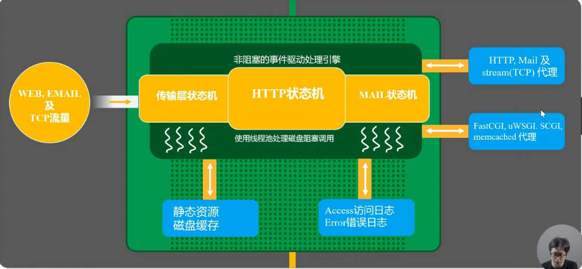
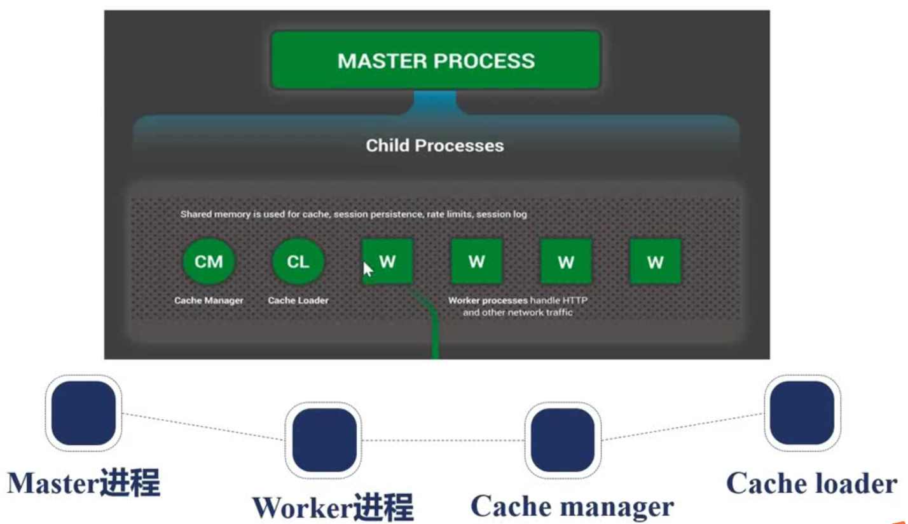
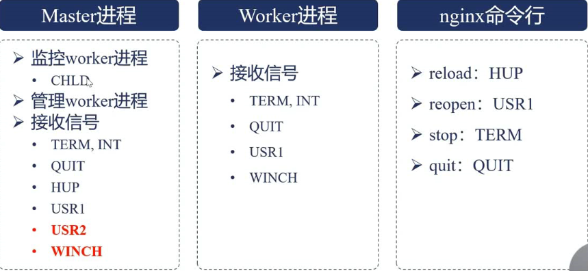
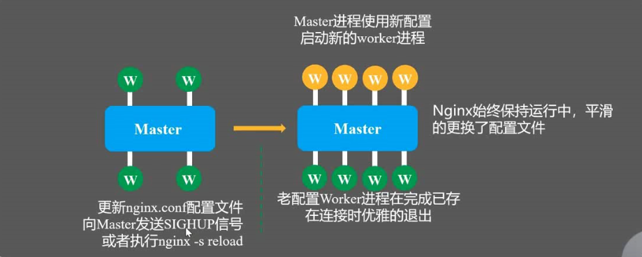
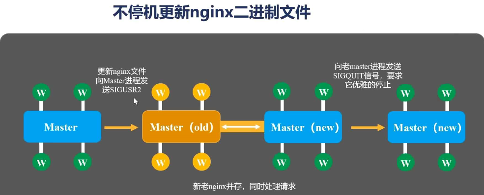

2_Nginx架构基础
请求处理流程

进程结构
- 单进程 开发
- 多进程 生产，保持健壮，充分利用多核处理器
 - Master 进程 监控管理worker进程（启动，检查，配置文件载入，热部署等）
- worker 进程 处理请求
- Cache manager 管理缓存
- Cache loader 加载缓存（后端服务响应缓存到内存）
为什么使用多进程，而非多线程？
保证可高用性，可靠性，线程件共享内存空间，若第三方模块引发地址越界时会导致nginx进程挂掉。
不仅将worker线程数设置为cpu核数，还应将worker进程绑定到固定的核上，减少缓存失效。
Nginx进程结构实例演示
kill -SIGHUP masterPI 与 -s reload结果相同 ：重新启动新的worker进程、Cache Manager进程
kill -SIGTERM workerPI ，worker进程收到停止信号会退出，并会向master进程发送CHLD信号，master将再拉起一个worker进程
结论：命令行中的一些子命令 是在向master进程发送信号
Nginx进程管理：信号

- master进程
- CHLD linux规定子进程终止时向父进程发送CHLD信号
- TERM,INT 立刻停止nginx进程
- QUIT 优雅停止，不立刻结束连接
- USR1 重新打开日志文件（切割文件）
- USR2、WINCH 不能使用Nginx命令行+特定命令向master发送命令，只能使用linux 命令行kill直接向master进程发送信号（需要先找到PI）
- worker进程
一般不直接向worker进程发送信号，而是通过向master进程发送信号管理worker进程 - nginx命令行
nginx命令行工具会读取 nginxpid 文件中的NginxPID 将nginx命令转换为linux命令发送信号
reload配置文件的真相（reload流程）
- 向master发送HUP信号（reload命令）
- master进程检查配置语法
- master进程打开新的监听端口
- master进程启动新worker
- master向老worker发送QUIT信号
- 老worker关闭监听句柄，处理完当前请求后结束进程

热部署流程

- 更新配置文件
- 向master发送USR2信号
- master修改pid文件名，加后缀.oldbin
- master用新配置文件启动新master（新master是老master的子进程，新master会启动worker；此时新老master共存）
- 向老master进程发送QUIT信号，关闭老master
- 回滚：向老master发送HUP（reload），向新master发送QUIT
优雅关闭worker
对于http请求可以识别出当前连接没有在处理请求，此时可以优雅关闭
对于TCP/UDP/WebSocket 无法识别
- 设定定时器 worker_shutdown_timeout
- 关闭监听句柄（不再处理新请求）
- 关闭空闲连接
- 在循环中等待全部连接关闭（当超过定时器后会强制关闭，不再优雅）
- 退出进程